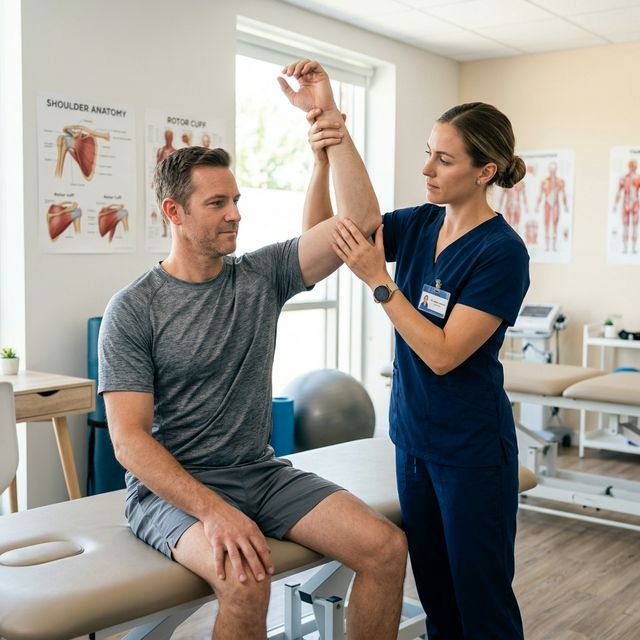

Frozen Shoulder Recovery: The Complete 3-Phase Clinical Guide

The pain of a frozen shoulder (adhesive capsulitis) is unlike any other. It restricts your ability to dress, drive, and sleep, causing extreme personal frustration for patients in **Wayanad**.
At Physio Dynamics Panamaram, we have developed a specialized 3-phase shoulder protocol. This system respects the three distinct clinical stages of this condition: **Freezing**, **Frozen**, and **Thawing**.
The Three Stages of Frozen Shoulder Explained
Understanding which stage you are in is crucial for your recovery. Treatment for Phase 1 is completely different than Phase 3.
Pain is at its highest, and movement is slowly lost. Use gentle mobility and pain relief.
Pain might stay the same, but the shoulder is extremely stiff. Focus on gradual joint mobilization.
The joint finally begins to open up. This is the stage for aggressive strengthening.
5 Clinical Exercises to Restore Shoulder Mobility
Passive Pendulum Swings
Why it works: Gravity creates space between the humeral head and the socket, reducing the internal pressure of the "frozen" capsule.
- Lean forward on a table with your healthy arm.
- Let the affected arm hang straight down.
- Swing the arm in small, dinner-plate sized circles. Give it almost no muscle effort.
- Perform 100 circles in each direction every day.
Towel Internal Rotation Stretch
Step-by-Step Instruction:
- Hold a long towel behind your back vertically.
- Your "good" hand is over the shoulder, "bad" hand is at the small of your back.
- Pull up with the good arm—this pulls the restricted arm into a rotation stretch.
- Hold for 20 seconds. Repeat 10 times.
Doorway External Rotation
Effect: External rotation is usually the first movement lost. This stretch focuses specifically on the front of the shoulder capsule.
- Stand in a doorway with your elbow at a right angle.
- Rest your forearm on the doorframe.
- Slowly rotate your body away from the door until you feel a stretch in the front of the shoulder.
- Hold for 30 seconds. Do not force it—shoulder pain should not be sharp.
Physiotherapy Modalities We Use in Wayanad
At our Panamaram center, we combine these home exercises with professional tools to speed up the "thawing" process:
- Manual Joint Mobilization: The physical therapist manually glides the joint to break micro-adhesions.
- Therapeutic Ultrasound: Deep heat to improve collagen elasticity.
- Dry Needling: To release trigger points in the surrounding rotators.
- IFC (Interferential Current): Advanced pain management to help you sleep better at night.
Frequently Asked Questions (FAQ)
Clinical Expertise
If you've been "frozen" for more than 3 months, it's time for professional mobilization. Our specialized shoulder rehab in Wayanad has a 90% success rate.
Find Our Clinic
Physio Dynamics
UB City Centre Building, Near Crescent Public School,
Panamaram, Wayanad, Kerala 670721
+91 62829 29104
physiodynamics10@gmail.com
Mon - Sat: 8:00 AM - 7:00 PM
Sunday: Closed (Emergency Only)